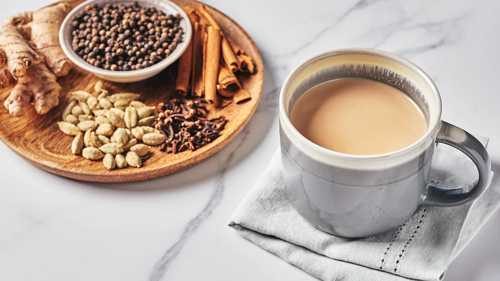

Masala Chai
How to Make Masala Chai

Description:
The instructions on this page will make brewing masala chai a breeze! Following this recipe will simply result in a delicious and aromatic masala chai. So now you can brag to all your friends that you can brew masala tea! Furthermore, this recipe will improve your chai-making skills in every way. So, what are you holding out for? Buckle up your seat and get ready to create some simple masala chai!
Materials/Ingredients:
-
Masala Chai Bag (buy here)
- Mini Strainer
- Small Pot
- Mug/Cup
- Evaporated Milk
- Brown Sugar
- Spoon
- Stove/Microwave
- Water
- Milk(2-3%)
- Tongs
Steps:
- Get your mug/cup, and fill 90% of the cup with warm or hot water.
- Pour the water from the cup into a small pot.
- Place the pot on top of your stove, and set the stove to high heat. Now wait until the water comes to a boil.
- Take one of your tea bags and drop it into the pot.
- Grab your tongs. Then using your tongs, grab the tea bag and squeeze it for 5 seconds. Now repeat this every 30 seconds
- After 2-3 minuts take the tea bag with your tongs and throw it into the trash. After that take your pot at place it somewhere else. Then get evaporated milk and pour a little.
-
Then mix it with a spoon. If the color of the tea isn't a really light brown. That means you need to pour more. (The color the Chai should be)
- Repeat step 7 until it is the color in the image shown.
- Place the pot back onto the stove. If the chai looks foamy and about to pour out that means you need to take it off the heat. After taking it off put it back on the stove, and lower the heat.
- Repeat step 9 for 2-3 minutes.
- Take the pot and put it somewhere else. Then Turn off the stove, and get your strainer.
- Put the strainer on top of the cup with one hand, and then pour the chai from the pot into the strainer, slowly.
- Pour a little bit of regular 2-3% milk into the cup.
- Then put 2 tea spoons of brown sugar into the cup.
- Mix the chai with a spoon.
- Finally, enjoy your masala chai!
You can make this tea with a microwave. All you need to do is microwave your water for 1 minute. Then put your tea bag, and microave for another 1 min 30sec.
Then just put some evaporated milk until the color in the picutre. After that, follow step 13-16. That's how you make masala chai in a microwave.
{kind=link}
.png)